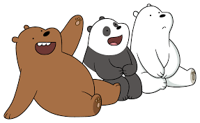

PARA BERUANG
 (ARTICLE SOURCE)Though it is unknown how they met, it is known that they have been together since very early childhood. The only known information about the bears before they met is that Grizzly was born in a forest in the U.S and was found perched on a tree by park rangers while in distress. He was afterward adopted by a TV Network to star in Family Troubles, a Canadian Sitcom; Panda was originally from Shanghai, China and raised in captivity until he escaped the facility; and Ice Bear came from the Russian Arctic and was raised by Yuri until he was forced to leave him on a floating iceberg after being chased off by hunters.
Ever since they met, they have been sticking together in the search of a new home. For a while, their home was a box on a road with "Free Bears" written on the side. In "The Road", their attachment to boxes seems to be rather strong, and, after losing theirs, they attempt to find another box to replace it. Though they occasionally find places to stay that aren't boxes, they don't seem to travel very far without one.
The three eventually found themselves lost at sea with no food in an attempt to reach Japan. Eventually, a large wave crashes into them and washes them up into the shore of an island where they meet two castaways. They introduce themselves as Dave and Karla respectively. The Bears discover they've been trying to escape for a while but with no success.
The following night, the three cubs explained to their new friends how they got stranded on the island in the first place. Eventually, Dave heads off to bed and Karla asks the Bears if they're ready to sleep. They manage to convince her to sing them a lullaby before they can sleep. She sings them a song she had sung with her sister all the time when they were children. This leads to the Bears falling asleep and Karla heading to bed herself.
In the morning, Ice Bear heads outside to find Dave attempting to pick coconuts out of a palm tree but failing. He decides to give it a go and climbs up the tree, grabbing coconuts and throwing them down en masse to Dave. His brothers wake up shortly after, wondering where their younger brother was, though not too concerned of his whereabouts and have breakfast with Karla. Before they can do anything about it, Ice Bear barges into the shack with Dave in tow. Being unable to speak, he has trouble explaining what he'd just seen from when he was in the tree. Motioning for everyone to follow him, he leads them to a broken-down helicopter. After some inspection, both any emergency supplies and a functional engine were missing, leading Karla to grow depressed.
To cheer her up, the Bears decide to collect fruits from around the wilderness for her and bring it to her. In the process of this, Ice Bear accidentally drops a coconut, causing it to roll away. Running after it, he finds it now sitting by a large crate. His brothers head up to him to find the crate as well. Curious, they inspect the crate and find out it's a bunch of supplies. They open and sift through the supplies and discover an inflatable raft. Excited to tell Karla, they start to make there way out when Dave appears.
The Bears explain to him how they found the crate and how it would help them get off the island. Dave grows furious at this and steals the crate. Confused, the three attempt to retrieve it as Dave tries to throw it off a ledge. This leads to him swinging both the Bears and the crate over the ledge into a pool of quicksand. Confessing his love for Karla to them, his also confesses his plan of keeping her on the island so she'd fall in love with him before leaving the Bears to die.
Not willing to let him get away with it, the three attempt to escape but to no avail. Despite this, Grizzly quickly hatches a plan and dives under to grab the inflatable raft. He manages to find its pull string and pull it up, causing it to inflate and push the bears out to safety. They then make their way to Karla whom they find alongside Dave who is starting to act rather creepy. Warning her about him and revealing his plan to her, the four start running away from Dave to the shore. He gives chase and they all end up at the beach where they find another inflatable raft.
Before they're able to board it, Dave manages to snag Ice Bear's paw and attempts to drag him back to make Karla stay with him. Unable to break free, the young bear grabs a star-fish and throws it at his face, causing him to release his grip on Ice Bear and allowing them to sail off to safety.
Night time soon arises. The Bears had fallen asleep, followed by Karla. A ship finds the raft and pulls Karla up, seemingly not noticing the Bears also aboard the raft. They eventually find themselves adrift as they slumber, only to wake up early in the morning and find Karla is missing. However, they had also reached their original destination: Japan.
WELL, THAT WAS AN EXAMPLE OF DEVELOPING A STORY, WE CAN MAKE A BETTER ONE LATER. ANYWAY, JUST ENJOY YOUR DAY IN THE END OF YEAR 2020.